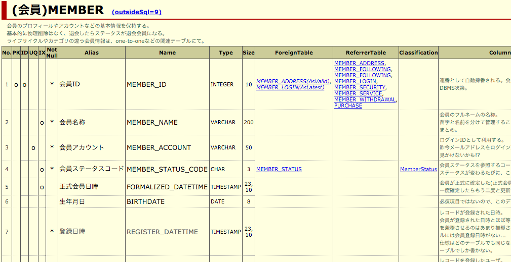

SchemaHTML
Alto DBFlute のパートです。
SchemaHTMLとは？
スキーマのメタデータ(テーブル構成など)を人が見やすい形にまとめたドキュメントです。
単なるDB定義だけでなく、DBFluteでテーブルやカラムに設定された付加情報なども表示され、 既にプロジェクトでERDやテーブル定義書があったとしても、ディベロッパーの実装支援には欠かせないドキュメントとなります。 しっかり別名(和名)などを定義すれば、これをこのままテーブル定義書として利用することも考えられるでしょう。
SchemaHTMLの例
SchemaHTML Example

テーブル一覧・カラム情報
自動生成対象となっているテーブルの一覧と、カラムの詳細情報が表示されます。設定されたリレーションのリンクを辿って、関連テーブルを確認することもできます。
SchemaHTMLのテーブル詳細(会員)の例
SchemaHTMLのテーブル詳細(会員)の例 
DBコメントに別名(和名)の定義を
DBコメントに別名(和名)が設定されている場合は、それも一緒に表示されるので、積極的に設定することでよりわかりやすいテーブル定義書となるでしょう。
もろもろの表現上の捕捉
以下の主な表現上の補足です。
- PKは主キー制約、IDはIdentity、UQのユニークキー制約、IXはインデックスを示す
- カラムの PropertyName は、プログラム上でのプロパティ名を示す
- カラムの JavaType は、プログラム上で利用するマッピングされたデータ型を示す
- PK や UQ の "o" で、小さめのイタリックになっている場合は、実際に制約がなく、DBFluteプロパティで付与された情報であることを示す
- リレーションのリンクで、小さめのイタリックになっている場合は、実際に制約がなく、DBFluteプロパティで付与された情報であることを示す
- カラム名で、薄い色になっている場合は、共通カラムであることを示す
- カラム名で、イタリックになっている場合は、排他制御カラムであることを示す
- PK, UQ, IXでの "o+" は、とある複合キーのトップカラムになっていることを示す @since 1.0.5G
- PK, UQ, IXでの "+o" は、とある複合キーのサブカラムになっていることを示す @since 1.0.5G
- PK, UQ, リレーションのリンクなどでは、ツールチップで制約名などの付加情報を確認できる
外だしSQL一覧
テーブルと関連付いている外だしSQLの一覧が、テーブルごとに表示されます。テーブル定義の方からこの該当テーブルの外だしSQLの一覧へリンクで辿れます。
SchemaHTML - OutsideSql
自動生成対象となっているプロシージャの一覧も表示されます。
SQLのタイトルや説明を付けていると、よりわかりやすく表示されます。
区分値一覧
設定された区分値の詳細の一覧が表示されます。カラムとの関連がある場合は、テーブルのカラム情報から関連する区分値の詳細へリンクで辿れます。